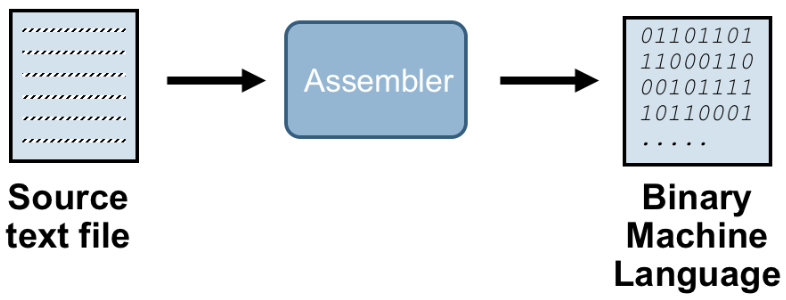

Hack Assembler
About Assembler
Assembler is a program that acts as a simple language translator (convert assembly language to machine language)

Hack Assembler
program that translates programs written in the symbolic Hack assembly language into binary code.
input file: xyz.asm
output file: xyz.hack
Hack assembly language consist of two types of instruction
A-instruction: @value
A-instruction (addressing instruction) assigns value of const to register A i.e A <- const
ROM[A] register is selected (ROM : Read only memory act as instruction memory)C-instruction: dest=comp;jump
C-instruction (compute instruction) does basic computation assign valuse to destination.D = M+1 // where D and M are registerWe can also perform branching based on value comp and opcode jump
D;JGT // if D > 0 jump to ROM[A]
How to build Hack Assembler
Hack assembler can be build using the idea of 2 pass assembler.
pre-processing :- handle all white space and ignore comments
1-pass :- iterate over all instructions and build up symbol table
2-pass :- using symbol table and instruction translate into binary code.
General approach
- Preprocess by parse each line of .hack code ignoring white space (i.e. empty line, comments, identation)
can be done using file handling and processing in Python..hack code (input)
// Computes R1=1 + ... + R0 // i = 1 @i M=1 ...symbolic code (output)
@i M=1 ... Create a symbol table and add all 23 pre-defined hack symbols.
First pass
If the instruction contain a symbol (i.e could be pre-defined, label or variable) add it to symbol table if only variable . eg)
| symbol | value | | -------| ------| .... | LOOP | 4 | | STOP | 18 | | i | 16 |Second pass
start from begining
- Translate each instruction (if w/o any symbol) directly . Need to figure out what type of instruction it is A-type or C-type can be done by just checking whether inst. start with @ or not.
- Then if A-TYPE:
@16 => 0000000000010000M=1 => 1110111111001000 - If the instruction contains symbols use the symbol table to parse it.
- Keep writing output to the new file as we go through each instruction. #####